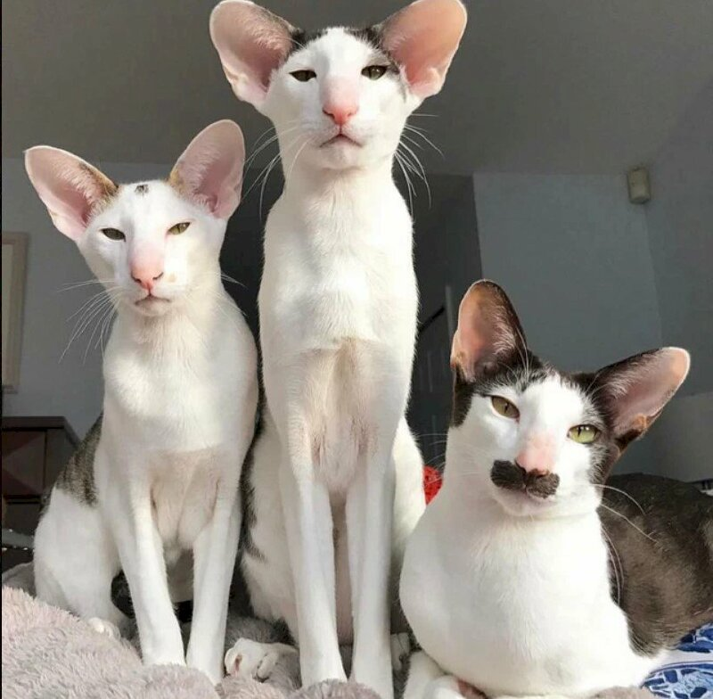

Triển lãm số 01 – Nguyễn Hoài Thương

Chủ đề: Người quan sát trầm lặng
Mô tả ngắn: I=Snve
"Ba cá thể, ba thế giới khác biệt"

Ý tưởng: Mỗi con người là một bảo tàng thu nhỏ lưu giữ ký ức và dấu ấn cá nhân.
Mục đích & Thông điệp: Kết nối và tôn vinh màu sắc riêng biệt của từng thành viên trong nhóm.
Chọn một cánh cửa để bước vào không gian cá nhân của từng thành viên.
Chủ đề: Người quan sát trầm lặng
Mô tả ngắn: I=Snve

Chủ đề: Người nhà đẳng
Mô tả ngắn: Chỉ sợ trời phật không thương chứ sợ gì người thường không nể?

Chủ đề: Nhà hoạt động nghệ thuật
Mô tả ngắn: "with glory i shall fall"